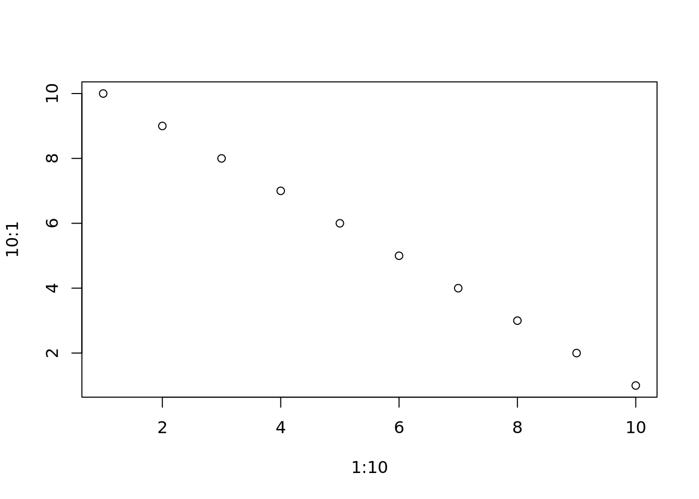
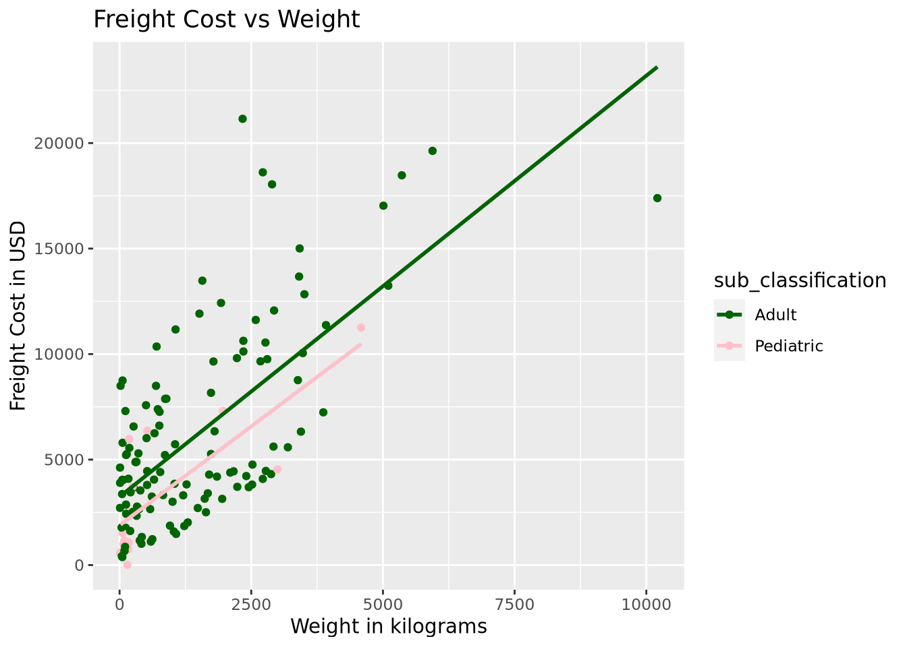
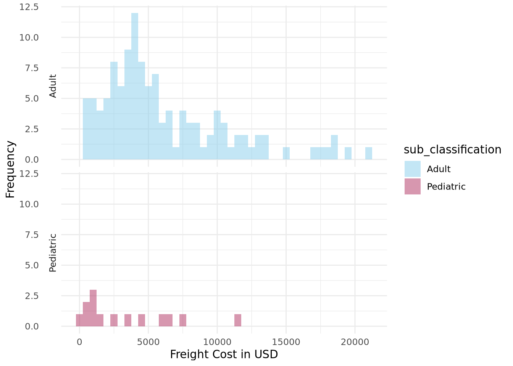

# Your Code Here
library(tidyverse)
library(fst)Opportunity to Excel # 1
Author
Max Mathues
Published
Last modified on October 10, 2023 00:20:16 Eastern Daylight Time
Note
By committing and pushing this Quiz to the class repository you are acknowledging the all work is your own accept as noted in your acknowledgement statement at the end of the document. Please commit and push your work to the class repository no later than 2:00 pm, Thursday October 12, 2023.
Problem 1 (4 pts.)
Load the tidyverse and fst packages.
Problem 1 Answers (4 pts.)
Problem 2 (6 pts.)
Read into R the data set late_shipments.fst stored in the data directory using the read.fst() function and store the results in late_shipments. Verify programmatically that the dimensions of late_shipments are 1000 by 26.
Problem 2 Answers (6 pts.)
Problem 3 (8 pts.)
Create a subset of late_shipments named late_shipments_air where the shipment_mode is "Air" and the country is "Vietnam". The dimensions of late_shipments_air should be 135 by 26. Use late_shipments_air for Problems 4 through 8. Verify programmatically that the dimensions of late_shipments_air are 135 by 26.
Problem 3 Answers (8 pts.)
Problem 4 (10 pts.)
Create a scatterplot of freight_cost_usd versus weight_kilograms mapping sub_classification to color using the late_shipments_air data frame. Superimpose least squares regression lines on the scatterplot. Make sure to replace computer labels with descriptive labels. Extra Credit (3 pts): Make the Adult least squares regression line darkgreen and the Pediatric least squares regression line pink.
Problem 4 Answers (10 pts.)
# Your Code Here
plot(1:10,10:1)
ggplot(late_shipments_air, aes(x = weight_kilograms, y = freight_cost_usd, color = sub_classification))+ geom_point()+
geom_smooth(method ="lm", se =FALSE)+
scale_color_manual(values = c("Adult"="darkgreen","Pediatric"="pink"))+
xlab("Weight in kilograms")+
ylab("Freight Cost in USD")+
ggtitle("Freight Cost vs Weight")

Problem 5 (10 pts.)
Based on the scatterplot you created in ?@fig-q4, do you think it is appropriate to use a parallel slopes model or a non-additive (interaction) model? Please explain your rationale.
Problem 5 Answers (10 pts.)
Problem 6 (10 pts.)
Create histograms of freight_cost_usd by sub_classification such that the histogram for Adult is displayed on top of the histogram for Pediatric. Set the binwidth to 500 and use your favorite color for the fill argument. (Hint: facet_grid())
Problem 6 Answers (10 pts.)
# Your Code Here
plot(1:10,10:1)
asdf1 <- ggplot(late_shipments_air, aes(x = freight_cost_usd, fill = sub_classification)) +
geom_histogram(binwidth =500, position ="identity", alpha =0.5) +
facet_grid(sub_classification ~ .,switch="y") +
scale_fill_manual(values =c("Adult"="skyblue","Pediatric"="maroon")) +
labs(x ="Freight Cost in USD", y ="Frequency") +
theme_minimal()
asdf1
Problem 7 (12 pts.)
Characterize the distribution of freight_cost_usd for Adult.
Problem 7 Answers (12 pts.)
Problem 8 (9 pts.)
Create a parallel slopes model for regressing freight_cost_usd on to weight_kilograms for the different levels in sub_classification. Store the result in mod_ps.
- Report and interpret the slope of the model.
- What is the model’s \(y-\)intercept for
Pediatricshipments?
Problem 8 Answers
# Your Code Here
# 3 pts.
mod_ps <- lm(freight_cost_usd ~ weight_kilograms + sub_classification, data = late_shipments_air)
mod_ps
Call:
lm(formula = freight_cost_usd ~ weight_kilograms + sub_classification,
data = late_shipments_air)
Coefficients:
(Intercept) weight_kilograms
3251.434 1.986
sub_classificationPediatric
-1455.383 Your answers here:
The y-intercept for Pediatric shipments is 1796.051.
The slope is 1.986.
Problem 9 (15 pts.)
Given that 8% of all shipments from Vietnam are late, what is the probability at least 90% of the next \(n = 500\) shipments will be on time?
- Define your random variable and specify its distribution before writing a mathematical statement and showing the code you use to obtain an answer.
- What is expected value and standard deviation of your random variable?
Problem 9 Answers (15 pts.)
Your answers here:
The random variable y-hat is normal
Mathematical Statement: The probability of at least 90% of the next shipment making it on time is 95.03699%.
The standard deviation is .0121326
The expected value is .08
Problem 10 (8 pts.)
A gambler has in his pocket a fair coin and a two-headed coin. He selects one of the coins at random; when he flips it, it shows heads. What is the probability it is the fair coin? Show all work!
Problem 10 Answers (8 pts.)
The probability of it being a fair coin is 1/3
Bayes formula: ((1/2)(1/2))/((1/2)(1/2)+1(1/2)), you can also find that it is 1/3 by taking all of the heads from the two coins and seeing that it totals 3, and only one of which belongs to the fair coin.
Your text answer here: 1/3 or 33.33%
Problem 11 (8 pts.)
A coin is tossed 25 times. Let \(x=\) the number of tosses that result in heads (\(H\)). Consider the following rule for deciding whether or not the coin is fair. Judge the coin to be fair if \(8\leq X \leq 17\). Judge the coin to be biased if either \(X \leq 7\) or \(X \geq 18\). What is the probability of judging the coin to be biased when it is actually fair?
Problem 11 Answers (8 pts.)
# Your Code Here
asdf3 <- dbinom(18, 25, .5) +
dbinom(19, 25, .5) +
dbinom(20, 25, .5) +
dbinom(21, 25, .5) +
dbinom(22, 25, .5) +
dbinom(23, 25, .5) +
dbinom(24, 25, .5) +
dbinom(25, 25, .5)
asdf4 <- dbinom(7, 25, .5) +
dbinom(6, 25, .5) +
dbinom(5, 25, .5) +
dbinom(4, 25, .5) +
dbinom(3, 25, .5) +
dbinom(2, 25, .5) +
dbinom(1, 25, .5) +
dbinom(0, 25, .5)
asdf5 <- asdf3 + asdf4Your answer here: The probability of judging the coin to be biased is 4.3285251%
Acknowledgement Statement: All work on this quiz is entirely my own.